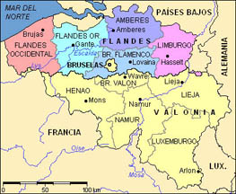

NOTAS - Capítulo 3
aljamas
Este término (del árabe al-jama'a, "congregación”) puede referirse simplemente a los barrios judíos o musulmanes típicos en muchas ciudades de la península (véase “juderías”). En su uso más restringido, se refiere concretamente a la comunidad judía o musulmana que gozaba de cierto grado de autogobierno dentro del reino, un arreglo frecuente en muchos lugares ya que los miembros de las dos religiones seguían ejerciendo sus ritos y observancias, con ciertas restricciones impuestas por los crisitianos, y se asociaba la religión en esta época con la ley. (De hecho, no se refería a otras “fes” o “religiones” sino a otras “leyes”.)
Andalucía
Nombre que designa el territorio más meridional del Reino de Castilla, conquistado en su mayoría bajo Fernando III. Corresponde a las tierras vinculadas a las ciudades principales de al-Andalus (Sevilla, Córdoba, Cádiz, Jaén, Almería, etc.). Su nombre claramente se deriva del árabe al-Andalus, pero no hay que confundir la Andalucía moderna con el al-Ándalus, que era el nombre árabe para toda la península.
Camino de Santiago
No era uno sino varios caminos, pero el principal, señalado abajo en el mapa, pasaba por la zona al sur de los Pirineos. El pueblo de Gonzalo de Berceo, San Millán de la Cogolla, se encuentra en un desvío del camino. Es de suponer que los monjes de San Millán intentarían atraer el tráfico de peregrinos hacia Compostela, tal vez con la ayuda de las entretenidas obras hagiográficas de Berceo.
{kind=link}
(Haz clic en el mapa.)
Cluny
Monasterio benedictino del centro-este de Francia. Los cambios en la liturgia romana llevados a cabo en este monasterio luego se impondrían en el resto de la Europa católica.
Llegó a ser el mayor poder eclesiástico de la Europa occidental en el siglo XI, más importante que la propia Roma. La construcción de la abadía del siglo XI (entonces el edificio más grande de Europa) se pagó con oro de España, enviado principalmente por el rey Fernando I de León y su hijo Alfonso VI.

(Haz clic en la imagen para ver una reconstrucción de la abadía. Fue destruida tras la Revolución francesa.)
conquistas cristianas (c. 800-1492)
La invasión de los árabes y beréberes redujo las tierras cristianas independientes a una pequeña franja en la cordillera cantábrica que recibe inicialmente el nombre del reino de Asturias. Las primeras conquistas cristianas tras la colonización musulmana de la península ocurren en los territorios poco poblados al sur de la cordillera cantábrica donde los musulmanes no se esforzaron en defenderlos por su falta de importancia. (El comienzo legendario de la “Reconquista” es una batalla —o, mejor dicho, escaramuza— en la localidad asturiana de Covadonga, liderada por el caudillo cristiano Pelayo, supuestamente en el año 722. Véase “Reconquista” para una crítica de este término.) En la costa este, los francos establecen la “Marca Hispánica” como satélite del Reino Franco a finales del siglo VIII, centrado en lo que es hoy el norte de Cataluña; este territorio luego se independizaría para formar varios condados —el más importante entre ellos el Condado de Barcelona— los cuales más tarde se incorporarían al Reino de Aragón, originalmente centrado en la ciudad pirenaica de Jaca. Las divisiones políticas que se encuentran a finales del siglo XII —entre los reinos de Portugal, León, Castilla, Navarra y Aragón— son el resultado de siglos de cambios políticos durante los que las fronteras mutuas variaban (e incluso algunas de estas entidades podían formar parte de otras).

(NB: Este mapa representa los cuatro reinos ibéricos que existían en el siglo XV: Portugal, Castilla-León, Navarra y Aragón; esconde por ende la complicada historia del desarrollo de estas entidades políticas. Además, el mapa puede dar la impresión de un proceso continuo de campañas militares contra reinos musulmanes a lo largo de varios siglos. No hubo nunca un programa militar tan coordinado. Véase la nota sobre “Reconquista”.)
convivencia
Otro poderoso mito de la historiografía sobre la Península Ibérica es la noción de que hubo una convivencia ideal de las “tres culturas” —cristianos, judíos y musulmanes— durante gran parte de la Edad Media y que esta convivencia representó algo único en su momento. (La versión más razonable de esta idea se limita a la época del Califato.) Es cierto que hubo un grado notable de interacción pacífica, mayor que en cualquier otro lugar de Europa, entre los miembros de estos tres grupos en las distintas etapas de la historia de la península, pero esta visión de la Edad Media ibérica resulta demasiado simplista. En efecto, lo que se alaba como tolerancia durante el Califato de Córdoba tiene claros paralelos en otros territorios prósperos de dominio musulmán en los que la coexistencia pacífica de cristianos, judíos y musulmanes era la norma (aunque no hay que olvidar que tenían que pagar impuestos especiales a los dirigentes musulmanes, al igual que los judíos en territorio cristiano). La masacre de judíos en el emirato de Granada en 1088, la expulsión de judíos bajo la presión de los almohades en el siglo XIII o las leyes redactadas bajo Alfonso X que limitaban las libertades de súbditos musulmanes y judíos son clara evidencia de que ser miembro de una minoría cultural en esta época conllevaba siempre una serie de desventajas importantes.
Edad Media
Convencionalmente se aplica el término de Edad Media (o Medievo) al período a partir de la caída del Imperio Romano de Occidente en el siglo V hasta la organización de las grandes monarquías absolutistas (España, Francia, Inglaterra) a principios del siglo XVI. Este período está caracterizado a grandes rasgos por la fragmentación política de Europa en pequeños reinos y principados; por el dominio ideológico de la Iglesia (que a su vez constituía una importante entidad política); por una economía principalmente agraria, basada típicamente en un sistema de explotación denominado feudalismo cuyo objetivo no era la exportación de excedentes sino el mero autoabastecimiento del feudo de cada señor; y por una rígida organización jerárquica de la sociedad en estamentos (aristocracia, clero, y campesinado, según las tradicionales divisiones de la época que ocultan las complejidades sociales que en realidad existieron; ing. estates). El término, por otra parte, es una obvia simplificación de mil años de historia. La situación particular de la Península Ibérica (por citar solo un ejemplo sobresaliente) refleja hasta qué punto esta designación resulta demasiado simplista. No obstante, el término es de uso general. Para ser preciso, se suele hablar de la Alta Edad Media (476-1000) y la Baja Edad Media (1000-1500), aunque por supuesto esta división también resulta insatisfactoria dados los importantes cambios históricos en todo este período.
epitafios de Fernando III (m. 1252)
En la tumba de Fernando III en la catedral de Sevilla se encuentran cuatro epitafios, cada uno de ellos en uno de los idiomas de su reino: latín, castellano, árabe y hebreo:
{kind=link}
(Haz clic en la imagen.)
"Escuela de Traductores de Toledo”
La historiografía tradicionalmente se ha referido a las actividades de distintos equipos de traductores de textos árabes en Castilla, sobre todo durante el reinado de Alfonso X el Sabio, bajo la rúbrica poco adecuada de la “Escuela de Traductores de Toledo”. Este término poco riguroso (de hecho, una invención del siglo XIX), podría parecer una designación para una entidad burocrática creada por decreto real que se reunía en un lugar específico con regularidad. Carecemos de información suficiente sobre los detalles de estos proyectos, pero es poco probable que hubiera algo tan formal. Sabemos que una red de intelectuales y letrados comisionados por el rey trabajaba en varios proyectos de traducción a lo largo de varios años. Si bien en el siglo XII, Toledo fue el centro de tales obras de traducción, bajo Alfonso X se patrocinaron proyectos también en Sevilla y Murcia.
Expansión aragonesa de los siglos XIV y XV
{kind=link}
(Haz clic en el mapa.)
feudalismo
Sistema de organización social y económica de grandes zonas de la Europa cristiana medieval. Los historiadores debaten la verdadera naturaleza del fenómeno y hay que tener presente que las manifestaciones del “feudalismo” variaban marcadamente en distintas partes del continente. (Por esta razón, entre otras, ciertos historiadores evitan el término completamente, alegando que solo causa confusiones.) Un ejemplo claro de la complejidad de la organización social y económica en la época “feudal” es la Península Ibérica. Por otra parte, el feudalismo es un término importante para los historiadores marxistas, que lo presentan como el sistema económico dominante antes de la imposición de nuevos regímenes económicos a partir del siglo XVI, como el mercantilismo y el capitalismo. Las relaciones sociales que se asocian con el feudalismo, sobre todo aquélla entre señor y vasallo, incluso si no correspondían a la complejidad real de las sociedades medievales, cobran gran importancia conceptual; esto se observará, por ejemplo, en la poesía amorosa de este capítulo, en la que la amada se describe como señor feudal que tiene poder sobre el amante, su “vasallo”.
Flandes (ing. Flanders)
Territorio del norte de Europa, adyacente a Holanda. Ahora forma parte de Bélgica. Abajo, un mapa de la Bélgica moderna, con las provincias de Flandes indicadas en color. En Flandes se habla flamenco, dialecto del holandés. En España era costumbre referirse a toda la zona de los países bajos (incluidos Holanda, Luxemburgo, y Valonia, donde se habla francés) como Flandes.

juderías
Muchas ciudades y pueblos tenían comunidades judías, típicamente congregadas en los centros urbanos en barrios llamados “juderías”. También hubo importantes poblaciones de mudéjares a menudo residentes en “morerías”, sobre todo en el reino de Aragón y en las antiguas ciudades musulmanas del sur de Castilla. Hay que señalar, sin embargo, que gran parte de la población mudéjar era rural. Los judíos, en cambio, comerciantes y profesionales, constituían una comunidad urbana.

(Haz clic en el mapa.)
letra visigoda, carolingia y “gótica”
La imposición de la reforma cluniacense en los siglos XI y XII en la península afectó también algo tan básico como la escritura. En Francia ya se había abandonado la antigua letra merovingia, reemplazada por la carolingia. En la península se utilizaba otro estilo de letra, llamada visigoda (primera imagen); cuando se impuso la letra carolingia (segunda imagen) en los monasterios ibéricos, ésta ya había empezado a cambiar para convertirse en lo que hoy típicamente se llama letra gótica (tercera imagen), estilo de escritura que sería la norma en el siglo XIII, tanto en Francia como en España y otros lugares de Europa. La consecuencia de esta reforma fue la pérdida de un gran número de documentos ya que, después de una generación o dos, se perdió el conocimiento necesario para leer los textos escritos en letra visigoda. Por otra parte, esta reforma impuso una uniformidad internacional, permitiendo así la fácil lectura de documentos de diferentes lugares de Europa.
| 1 | 2 |
3
muladíes, mozárabes, moros, mudéjares y moriscos
Una serie de palabras que empiezan por m y que reflejan la compleja situación religiosa y cultural de la Península Ibérica en la Edad Media y la Modernidad Temprana. El primer término, muladí, del árabe muwallad (“mestizo”) se refiere a los conversos (cristianos o judíos) a la fe musulmana. El segundo, mozárabe, del árabe must'arab (“casi árabe” o “arabizado”) se refiere a los cristianos que se quedaron en territorio musulmán sin convertirse pero adoptando aspectos de la cultura andalusí, incluida la lengua árabe. El tercero, moro (del latín, maurus, “nativo de Mauritania”, es decir, del noroeste de África), se aplicaba a los musulmanes del norte de África y de la Península Ibérica en general (y sigue en uso hoy como palabra despectiva para referirse a un nativo de Marruecos). El cuarto, mudéjar, del árabe mudajjan (“al que le ha sido permitido quedarse”), se refiere a los musulmanes que se quedaron en territorio cristiano sin convertirse. Los moriscos (de moro + -isco) se verán en los capítulos 6 y 7; el término se refería a los descendientes de los musulmanes de al-Ándalus residentes en Iberia tras la caída de Granada en 1492, en teoría cristianos pero que a menudo mantenían costumbres y creencias musulmanas en privado.
Occitania
{kind=link}
En los principados del sur de Francia se hablaba un conjunto de dialectos designados con el nombre de occitano. Con poca precisión, comúnmente se le designa provenzal, pero el nombre es inexacto ya que el provenzal es solamente un dialecto occitano, hablado en Provenza, la zona más oriental de Occitania. La moda de la poesía trovadoresca se originó en las zonas del sur de Francia donde se hablaban dialectos occitanos.
órdenes militares de la Península Ibérica

Las tres órdenes militares en España se convirtieron en poderosas organizaciones militares con abundantes tierras y posesiones. Los dirigentes de estos grupos a menudo llegaron a tener gran influencia política, y en los siglos XIV y XV los magnates más importantes competían por controlar las órdenes con sus ejércitos y propiedades. En siglos posteriores, tras la pérdida de importancia de las órdenes como milicias independientes del Estado y con la organización de ejércitos modernos, estos emblemas sin embargo mantuvieron un gran valor simbólico en la sociedad: había que solicitar permiso especial para llevarlos en la ropa y representaban la pertenencia de sus portadores a la más alta aristocracia (al menos en teoría).
oveja merina
Originaria del norte de África, la oveja merina se convirtió en la raza más importante de la ganadería ovina ibérica, por su resistencia y su excelente lana. En la cría de estas ovejas, se practicaba la trashumancia: es decir, la migración de los rebaños hacia tierras del norte (Castilla) en verano y hacia el sur (La Mancha y Andalucía) en el invierno.
Peste negra (expansión a partir de 1347)
{kind=link}
(Haz clic en el mapa.)
"Reconquista” (repaso y recordatorio)
Hay básicamente cuatro razones para rechazar este término:
1) El término “reconquista” es un anacronismo en el sentido de que no se utilizaba en la Edad Media (aunque los clérigos que apoyaban una mentalidad de cruzada, sobre todo a partir del siglo XII, hablaban de “restituir” ciudades y tierras al cristianismo); desde luego, la gente del Medievo no hablaba de “la Reconquista” (ni tampoco de “la Restitución”) como si fuera una cosa con una existencia objetiva. Otra cosa sería si los visigodos hubieran podido reconquistar en una o dos generaciones las tierras perdidas.
2) Realmente no se puede hablar en el campo de las acciones humanas de un “proceso” coherente que dura casi 800 años (entre 711 y la caída de Granada en 1492) como si las incontables generaciones participantes en ese supuesto proceso hubieran podido mantener milagrosamente la singularidad de su objetivo, en este caso, la “expulsión” de los musulmanes de la península.
3) El término Re-conquista implica que los que “reconquistan” son fundamentalmente los mismos que los conquistados originales; es decir que los ejércitos cristianos que conquistaron Toledo en 1085 eran esencialmente los mismos que dirigían la ciudad antes del 711, pero es absurdo pensar que hubo tal continuidad cultural durante casi 400 años. Los que conquistaron la ciudad eran los exponentes de una cultura muy diferente de la de los visigodos del siglo VII.
4) El término también implica que las tierras bajo control musulmán no eran fundamentalmente sus propias tierras y que eran en realidad tierras de cristianos. Por poner un ejemplo absurdo, hoy en día nos parecería ofensivo si Italia conquistara el norte de África y hablara de “reconquistar” y de colonizar esas tierras para la cristiandad. Como ya no viven musulmanes del siglo XIII, no se pueden ofender, pero nosotros seremos historiadores mucho más responsables si hablamos simplemente de “conquistas” cristianas de territorios musulmanes, al igual que hablamos de la conquista musulmana del reino visigodo.
Este término, harto problemático por varias razones, es todavía muy corriente en libros de historia sobre la Edad Media española. En los resúmenes históricos de esta clase se ha evitado rigurosamente. Como explica el historiador Richard Fletcher (que por otra parte utiliza el término), “Organizing their medieval history round the drama of the Reconquista has traditionally been a cherished feature of the self-image of the Spanish people. A potential national mythology could be spun about the Catholic, crusading mission of their medieval forebears. Above all, the kaleidoscopically jumbled history of the Spanish Middle Ages could be rendered intelligible by this radical simplification. Moralizing followed hard on the heels of simplifying. If the Reconquista was the destiny of medieval Spaniards, then persons or processes which were deemed to have delayed or obstructed it could be criticized, marginalized and vilified.” Como concepto, la “Reconquista” ha sido de extrema utilidad para los historiadores, cuya misión tradicional ha sido la de ofrecer una narrativa coherente de acontecimientos que carecen de esa supuesta coherencia. En realidad, representa una irresponsable simplificación ya que el período entre los siglos VIII y XV en la Península fue enormemente complejo. No se trata de una época de perpetuo conflicto entre “moros y cristianos” en el que son enemigos encarnizados. Ese es un mito posterior.
trovadores
La moda de la lírica trovadoresca en lengua occitana tendrá una influencia duradera en la vida literaria de toda Europa, a lo largo de los últimos siglos de la Edad Media y por mucho tiempo después del siglo XV. Para el poeta italiano Petrarca, por ejemplo, la poesía trovadoresca fue un modelo fundamental; indirectamente lo será también para todos los imitadores de Petrarca en los siglos XVI y XVII, como se verá en el Capítulo 5. La etimología de trobar, que significa básicamente “componer poemas (y acaso música también) a la manera de los trovadores”, ha sido tema de debate sin resolución. Una de las teorías más interesantes señala que el verbo árabe tarab (que significa cantar poesías líricas) se pronunciaba “trob” en el dialecto de al-Andalus. ¿Podrían los poetas en lengua occitana haberse apropiado de una palabra árabe para describir su nueva invención, inspirada quizás también en la poesía y música de al-Andalus? (Para ejemplos de cuatro trovadores, uno occitano, uno aragonés y dos gallegos, véase “Lecturas".)
universidades
La más antigua de Europa es la de Bolonia (Italia), fundada en 1088, pero hubo anteriormente en la cuenca mediterránea al menos tres centros de estudios superiores que tal vez sirvieron de inspiración para la de Bolonia, dos de ellos en territorio musulmán y dos en Europa: uno en el Cairo, otro en Córdoba y el tercero, fundado en el siglo X, en Salerno (Italia) —un centro de estudios de medicina basados en traducciones de textos árabes y el que tendría mayores posibilidades de servir de modelo para Bolonia—. Por otra parte, las universidades cristianas tienen sus raíces más directas en las escuelas catedralicias, es decir, las instituciones educativas vinculadas originalmente a las catedrales. La universidad de Oxford se funda a finales del siglo XI, la de París hacia 1150, la de Cambridge a principios del siglo XIII; en la Península Ibérica, se funde la de Palencia en 1208 ó 1212 y la de Salamanca en 1218. (Es posible que Gonzalo de Berceo estudiara en la primera.) La de Palencia perdió prestigio ya en el siglo XII y finalmente desapareció tras el auge de la más prestigiosa en Salamanca.